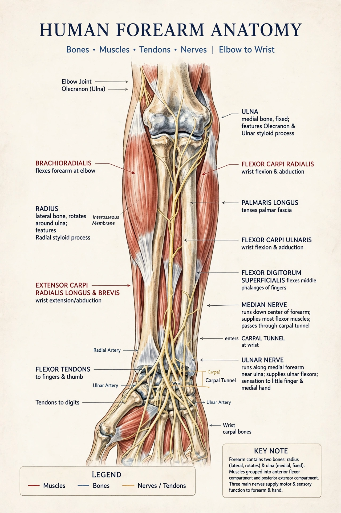

The forearm is the region of the upper limb between the elbow and the wrist. It contains two bones — the radius on the lateral (thumb) side and the ulna medially — joined by an interosseous membrane, and muscles that move the wrist, fingers and thumb and rotate the forearm (pronation and supination).

| Forearm | |
|---|---|
| Bones | Radius, ulna |
| Nerves | Median, ulnar, radial |
| Arteries | Radial, ulnar |
The anterior (flexor) compartment, supplied mainly by the median and ulnar nerves, includes flexor carpi radialis and ulnaris, flexor digitorum superficialis and profundus, flexor pollicis longus and pronators. The posterior (extensor) compartment, supplied by the radial nerve, includes the extensors of wrist and fingers, supinator, and brachioradialis.
The radial and ulnar arteries run through the forearm to the hand; the median, ulnar and radial nerves govern hand sensation and intrinsic function. At the wrist these structures pass near the carpal tunnel.
Both-bone forearm fractures and distal radius (Colles) fractures are common injuries. Compartment syndrome — rising pressure within fascial compartments — is a surgical emergency that can follow fractures or crush injury, risking Volkmann's ischemic contracture.